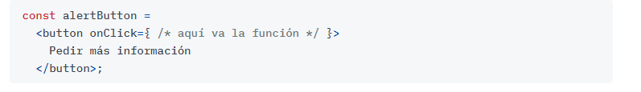
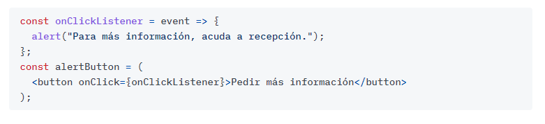

Selecciona un elemento y haz clic para que se lea en voz alta.
| Característica | React | JSX |
|---|---|---|
| Definición | Biblioteca de JavaScript para construir interfaces de usuario interactivas. | Sintaxis de extensión de JavaScript que facilita la creación de estructuras de interfaz de usuario en React. |
| Propósito | Facilita la creación de componentes reutilizables que gestionan el estado y la lógica de la interfaz de usuario. | Permite escribir código similar a HTML en JavaScript para describir la estructura de la interfaz de usuario. |
| Uso principal | Desarrollo de interfaces de usuario en aplicaciones de una sola página (SPA). | Especificación de la estructura de la interfaz de usuario en React. |
| Sintaxis específica | Sigue la sintaxis de JavaScript y utiliza una API específica de React para definir componentes. | Permite la incorporación de marcado HTML directamente en el código JavaScript. |
| Ventajas | - Gestión eficiente del estado con el uso de componentes. - Virtual DOM para mejorar el rendimiento de las actualizaciones. - Comunidad activa y amplia. |
- Facilita la escritura de código más legible y similar a HTML. - Integra el marcado directamente en el código JavaScript. |
| Desventajas | - Curva de aprendizaje inicial. - Puede resultar verboso para algunas personas. - Comunidad activa y amplia. |
- Puede ser confuso para quienes no están familiarizados con la sintaxis JSX. - Requiere transpilación a JavaScript estándar antes de ser interpretado por los navegadores. |
Las clases son otra forma de definir un componente en React y se caracterizan por tener propiedades. A diferencia de las funciones, pueden definir estados propios sin utilizar el concepto de Hook.
Dentro de los componentes de clase, existe una función constructora que se utiliza para definir el estado inicial del componente. Es muy importante llamar a la función super() dentro del constructor para que los parámetros funcionen adecuadamente.
Cuando escuchamos un evento, declaramos una función escuchadora (listener) que se ejecutará cuando se reciba un evento de cierto tipo.
Esto es así tanto para eventos del DOM como para eventos sintéticos
de React, sólo cambiaremos cómo asignamos la función al tipo de evento.
Vamos a ver un ejemplo. Queremos escuchar un evento de click desde un botón que declaramos con JSX. Escribiremos el botón () y en un atributo onClick
(ojo con la mayúscula) añadiremos la función "escuchadora", que será la reacción. Quedará así:

Podríamos escribir directamente la función escuchadora como una arrow function ahí, pero no quedaría legible. Preferiremos declararla fuera y la pasaremos (sin llamarla) al atributo de JSX:

Ya está. Cuando hagamos clic en el botón, React se encargará de escuchar el evento y de ejecutar la función.